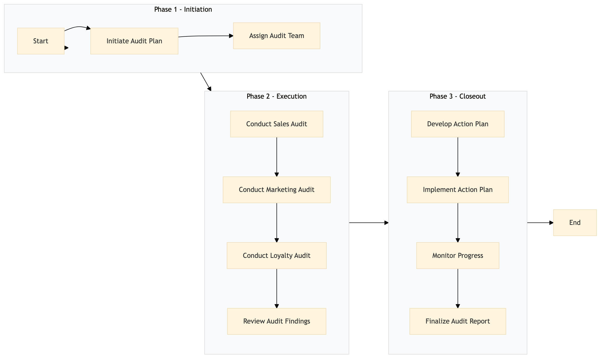

| Role | Steps |
|---|---|
| Brand Manager | 1.1 1.2 2.4 3.1 3.3 3.4 |
| Revenue Manager | 2.1 3.2 |
| Marketing Manager | 2.2 3.2 |
| Loyalty Program Manager | 2.3 3.2 |
| Step | Name | Role | System | Input | Output | KPI | Dec? | Exc? | Pain Point / Risk |
|---|---|---|---|---|---|---|---|---|---|
| 1.1 | Initiate Audit Plan | Brand Manager | Oracle OPERA Cloud | Audit checklist template | Customized audit plan | Less than 2 hours | N | Y | Ensuring the audit plan covers all critical areas without being overly burdensome. |
| 1.2 | Assign Audit Team | Brand Manager | Oracle OPERA Cloud, Workday HCM | Audit team members | Assigned audit tasks and schedules | Less than 1 hour | N | Y | Balancing the workload among team members to ensure thorough coverage. |
| 2.1 | Conduct Sales Audit | Revenue Manager, Front Desk Agent | Oracle OPERA Cloud, SynXis CRS | Sales data and audit checklist | Sales audit report | Less than 3 hours per team member | Y | Y | Accurately capturing sales data from multiple systems. |
| 2.2 | Conduct Marketing Audit | Marketing Manager, Digital Marketing Specialist | Oracle OPERA Cloud, Salesforce | Marketing campaigns and audit checklist | Marketing audit report | Less than 4 hours per team member | Y | Y | Integrating data from various marketing platforms for a comprehensive review. |
| 2.3 | Conduct Loyalty Audit | Loyalty Program Manager, Customer Service Agent | Marriott Bonvoy CRM, Oracle OPERA Cloud | Loyalty program data and audit checklist | Loyalty audit report | Less than 3 hours per team member | Y | Y | Analyzing loyalty data to identify trends and areas for improvement. |
| 2.4 | Review Audit Findings | Brand Manager, General Manager | Oracle OPERA Cloud, Microsoft Power BI | Audit reports from all teams | Consolidated audit report | Less than 2 hours | Y | Y | Synthesizing data from multiple sources into a clear, actionable report. |
| 3.1 | Develop Action Plan | Brand Manager, General Manager | Oracle OPERA Cloud | Consolidated audit report | Action plan with specific tasks and timelines | Less than 3 hours | N | Y | Creating a detailed action plan that addresses all identified issues. |
| 3.2 | Implement Action Plan | Revenue Manager, Marketing Manager, Loyalty Program Manager | Oracle OPERA Cloud, Salesforce, Marriott Bonvoy CRM | Action plan with tasks and timelines | Implemented changes and updates | Less than 1 week per task | Y | Y | Executing changes across multiple systems and departments. |
| 3.3 | Monitor Progress | Brand Manager, General Manager | Oracle OPERA Cloud, Microsoft Power BI | Action plan with tasks and timelines | Progress report | Less than 1 hour per week | Y | Y | Tracking progress against the action plan to ensure timely completion. |
| 3.4 | Finalize Audit Report | Brand Manager, General Manager | Oracle OPERA Cloud, Microsoft Power BI | Progress report and final audit findings | Final audit report with recommendations | Less than 2 hours | N | Y | Compiling all information into a comprehensive, final report. |
The SM-FR-02 Brand Standard Audit & Quality Assurance process ensures that Marriott Bonvoy franchise hotels meet brand standards in sales, marketing, and loyalty programs. This audit helps maintain high-quality guest experiences and operational efficiency.